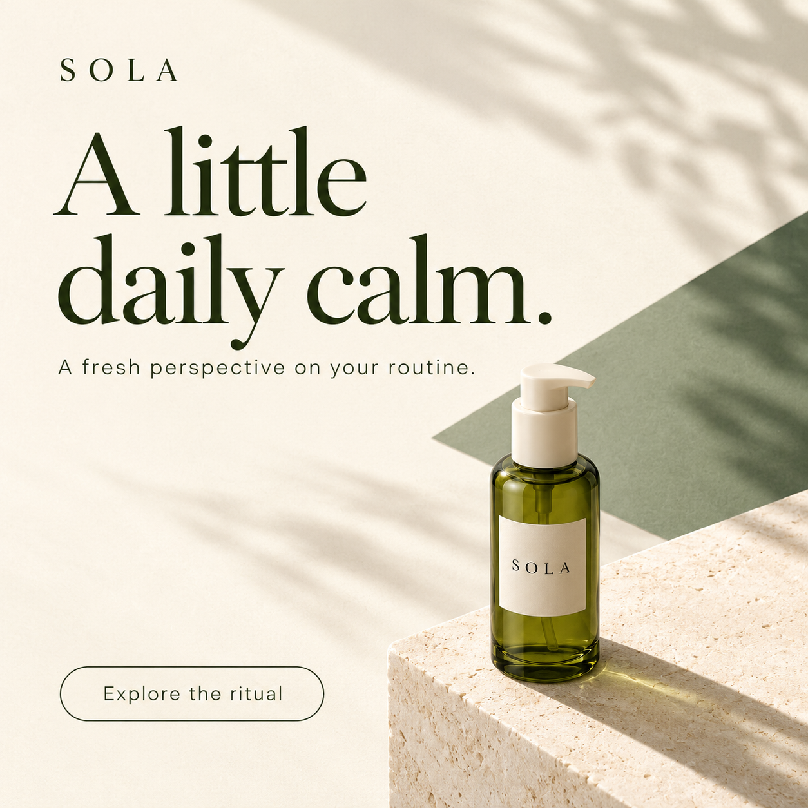
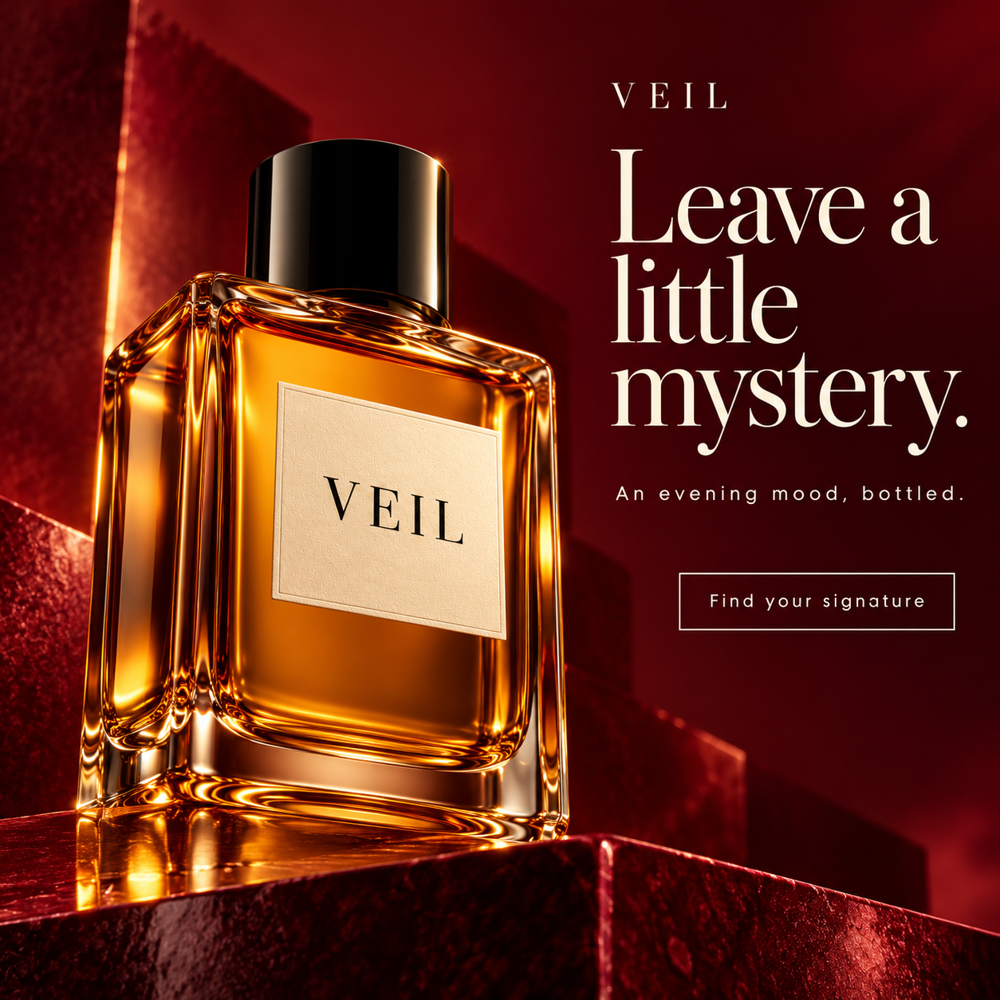
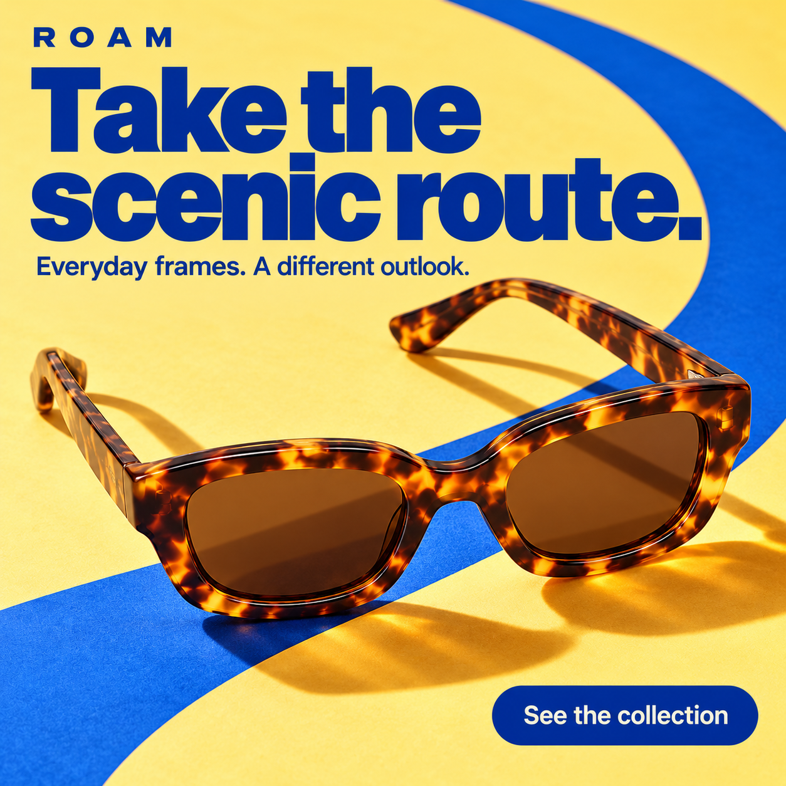
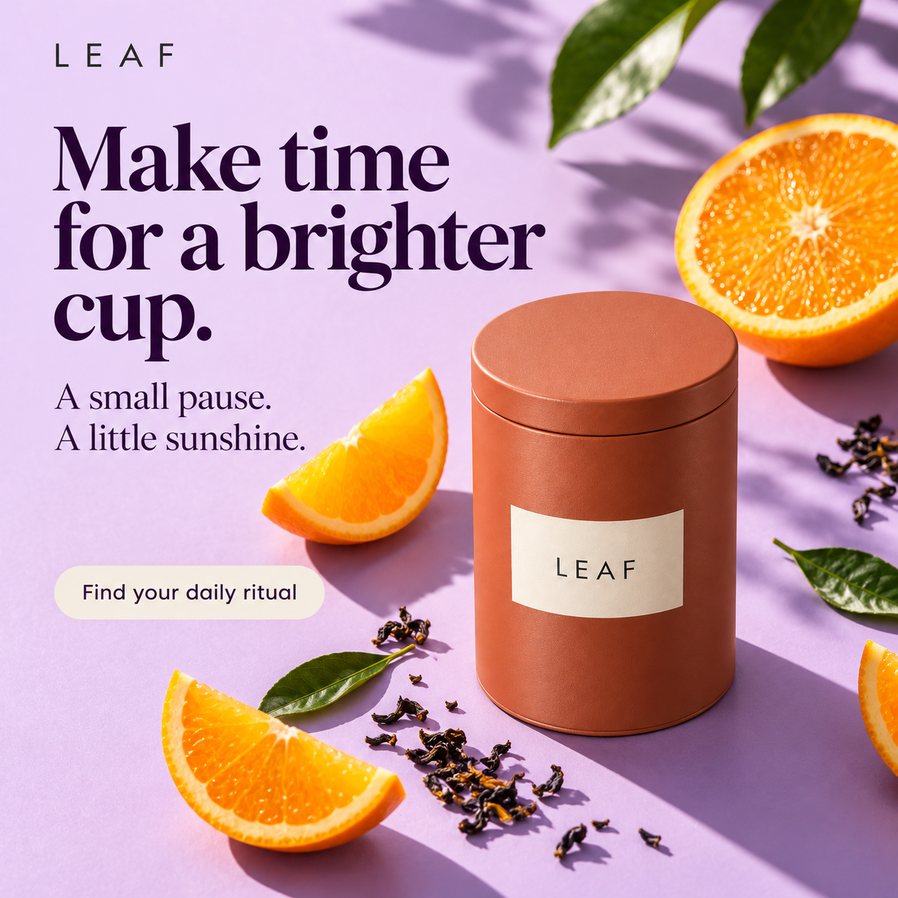
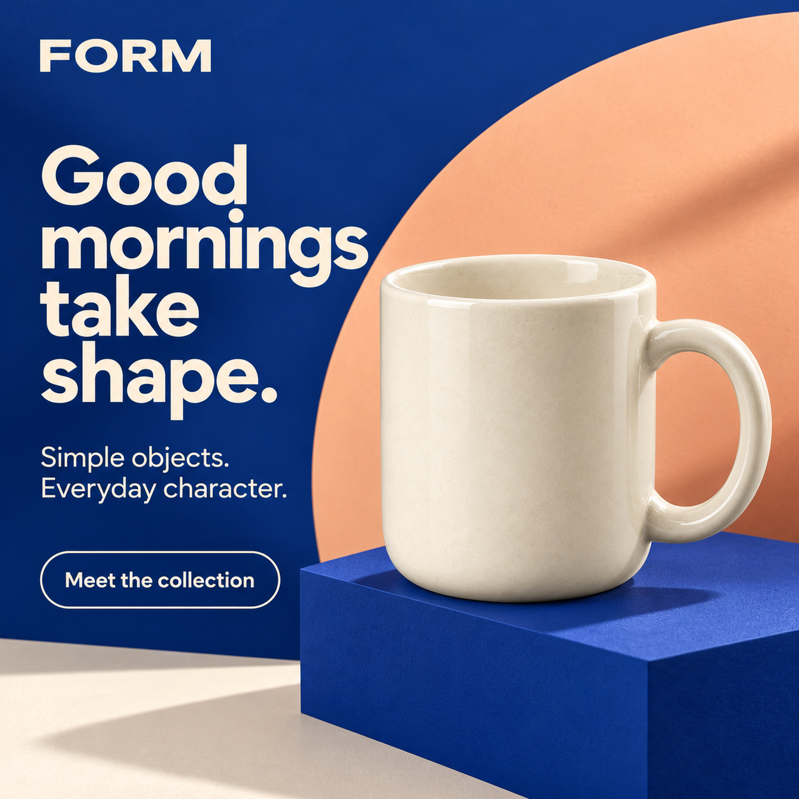

Six scene studies and five typography-led ad concepts. Explore new angles, bigger ideas and carefully placed words. Slide between the original view and the finished direction.
Five new campaign ideas
More than a picture. A reason to pause.
Different viewpoints. Stronger typography. A brand, a message and a next step.
Fictional advertising concepts: the names, products and campaign copy below are portfolio illustrations. These explore new viewpoints and framing; they are not claims of a real photo shoot or customer campaign. Drag left to see the original product view, and right to reveal the complete creative.

Original photoAd creative
‹ ›
SOLA / Fictional campaignAD 01
A little daily calm.
High-angle distance / botanical editorial
A distant, elevated product view makes room for a large headline and quiet supporting copy. Jade tones keep the mood fresh and considered.
Brand nameHeadline + copyInvitation to explore

Original photoAd creative
‹ ›
VEIL / Fictional campaignAD 02
Leave a little mystery.
Low-angle close-up / evening fragrance
A low three-quarter viewpoint, amber glass and deep burgundy give the bottle a dramatic role. A short headline sets the evening mood.
Brand nameHeadline + copyInvitation to explore

Original photoAd creative
‹ ›
ROAM / Fictional campaignAD 03
Take the scenic route.
Diagonal overhead / graphic accessories
A diagonal crop, tortoiseshell frames and bold colour create a sunny graphic campaign with a clear brand, message and invitation.
Brand nameHeadline + copyInvitation to explore

Original photoAd creative
‹ ›
LEAF / Fictional campaignAD 04
Make time for a brighter cup.
Overhead distance / citrus colour story
The small tin sits within a larger composition. Citrus shapes, colour contrast and headline space turn a plain product view into a brighter campaign.
Brand nameHeadline + copyInvitation to explore

Original photoAd creative
‹ ›
FORM / Fictional campaignAD 05
Good mornings take shape.
Low side angle / sculptural homeware
A changed viewpoint and oversized mug meet cobalt geometry. The type and shapes make a simple object feel like a playful launch story.
These are illustrative concepts for fictional products, not customer orders. For real work, we use your approved product photos and confirmed product details.
6 examples shown
BeforeAfter
‹ ›
Slide to find the story →
SOLA / Botanical skincare01
A little botanical calm.
Sage, soft daylight & fresh leaves
The bottle stays central. Fresh leaves, stone and soft shadows build a quiet daily ritual.
BeforeAfter
‹ ›
Slide to find the story →
LEAF / Sunlit tea02
A brighter daily ritual.
Citrus, terracotta & warm sunlight
Warm orange tones and citrus give a simple tea tin a bright, inviting shelf story.
BeforeAfter
‹ ›
Slide to find the story →
VEIL / Velvet fragrance03
An evening with an edge.
Burgundy velvet & glossy reflections
Deep burgundy, folds of velvet and a reflection give the amber bottle a dramatic evening mood.
BeforeAfter
‹ ›
Slide to find the story →
FORM / Graphic ceramics04
Everyday, with a twist.
Cobalt shapes & sculptural contrast
A familiar cream mug meets graphic blue geometry: a playful idea for a homeware launch.
BeforeAfter
‹ ›
Slide to find the story →
ROAM / Retro eyewear05
Take the scenic route.
Butter yellow & a retro travel mood
Tortoiseshell frames, sunny yellow and travel cues turn an everyday accessory into a summer story.
BeforeAfter
‹ ›
Slide to find the story →
MORROW / Evening candle06
Make room for slow.
Midnight green & cinematic limestone
Rich green, limestone and warm light create a calm night-time setting around an ivory candle.
j
Different products. Different moods. The same attention to the details.